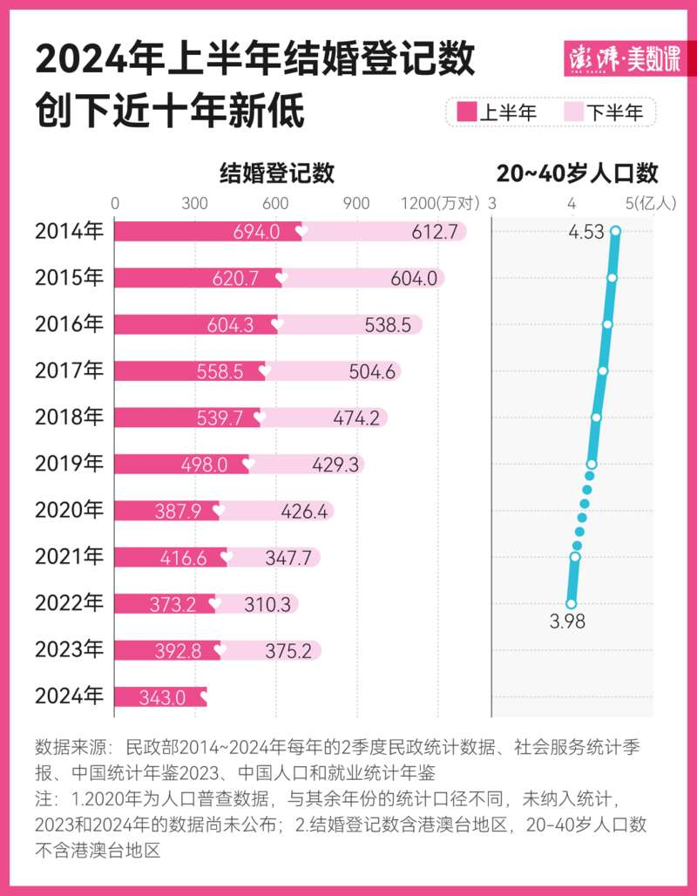
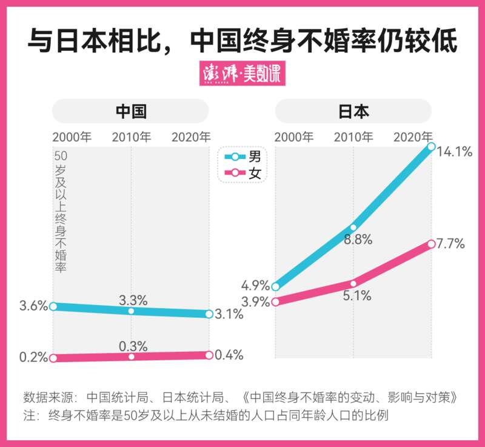
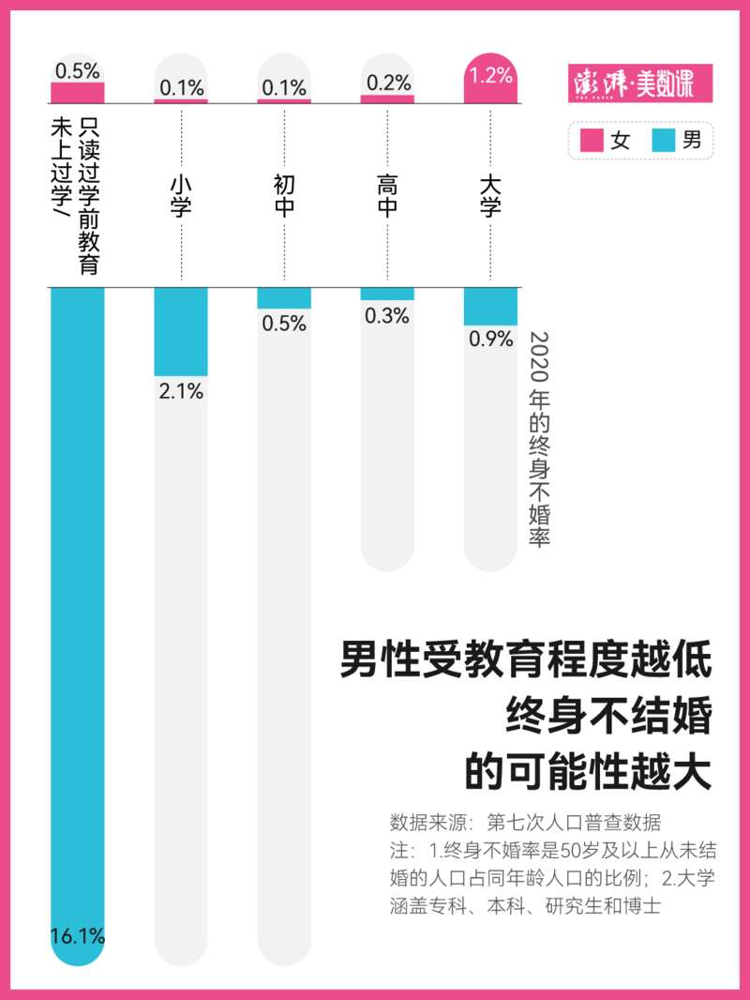
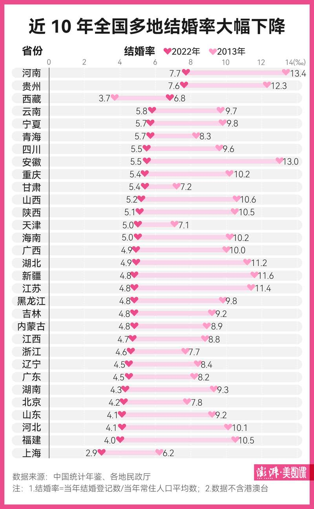

七夕将至，多地民政局“为爱加班不打烊”，然而步入婚姻的中国人可能越来越少了。
近日，民政部发布的《2024 年 2 季度民政统计数据》显示，今年上半年，全国结婚登记 343 万对，离婚登记 127.4 万对。其中，今年上半年的结婚登记数仅为 2014 年同期 694 万对的一半左右，创下近十年新低。
通过往年的数据来看，除 2020 年受疫情因素影响，近十年来上半年结婚登记数普遍高于下半年。人口学者何亚福据此推算，预计 2024 年全年结婚登记对数约为 660 万对，这将是自 1980 年以来的最低值。

导致这种现象的一部分原因是，适婚年龄人群在逐渐减少。从 2014 年到 2022 年，20-40 岁的人口已经减少了 5509.9 万人。而在现有的适婚年龄人群中，男多女少的性别挤压情况严重——2021 年，20-40 岁适婚年龄男性比女性多 1752 万人，性别比是 108.9。
尽管有这种客观因素的影响，但年轻人的婚姻观念的确在逐渐改变：“不婚不育保平安”“单身摆烂”等种种调侃层出不穷。
一些年轻人选择给虚拟 CP 办婚礼，或者给自己和钟爱的纸片人们举办婚礼；在豆瓣不婚不育的小组里，小组成员们探讨着不婚不育后未来的养老问题。
种种现象之下，难道中国人真的不结婚了吗？
终身不婚的中国人仍是少数群体
从终身不婚率来看，不结婚的中国人仍然只是少数。
人口学计算总和生育率时，将女性生育年龄上限定为 49 周岁。因此，国内一些研究者将 50 岁及以上的未婚人口界定为终身不婚群体。从 1990 年到 2020 年，中国人的终身不婚率始终在 2%以下。
与同处于东亚文化圈的日本相比，我国的普婚特征更为明显。2020 年，中国男性的终身不婚率为 3.25%，女性的终身不婚率为 0.24%。而日本已经进入了“婚姻冰河期”——2020 年，男性终身不婚率高达 14.1%，女性终身不婚率也有 7.71%，而 20 年前的这两个数据还分别只有 4.85%、3.93%，增长相当迅猛。
此前，日本国家统计局将“50 岁未婚率”称为“终身不婚率”。若运用此数据，日本的终身不婚现象将更加明显——2020 年，日本男性 50 岁未婚率为 28.25%，女性 50 岁未婚率为 17.81%。
而像美国等国家的终身不婚率也同样远高于中国。2020 年美国人的终身不婚率为 8.92%。目前来看，中国仍是一个“普婚”国家，而非“世界单身大国”。

近 20 年来，中国男性的终身不婚率远高于女性群体。
据第七次人口普查数据，受教育程度低的男性，终身不结婚的可能性大。女性则正好相反，受教育程度越高的女性，终身不结婚的可能性才越大。
未来终身不婚的老年人群体中，城市女性占比增加的可能性较大。中国社会科学院人口与劳动经济研究所副研究员王磊在其论文中写道，这是因为东部城市地区中高学历、高收入和高职位“三高”女性的人口规模将持续增加，而城市大龄未婚女性增多将导致女性终身不婚率提高。

中国人民大学人口与发展研究中心教授翟振武研究发现，尽管中国 20-29 岁未婚人群的比例在逐年增高，但在 35 岁之后的未婚人口比例却一直保持在较低的水平。这意味着，尽管越来越多的人不会在 20-29 岁时结婚，但基本上都会选择在 35 岁之前结婚。
结婚登记数下降的背后：晚结婚、适婚人群减少
结婚登记数减少也意味着结婚率下降。
从 2013 年到 2022 年，全国多地结婚率大幅下降。安徽在近十年中结婚率降幅最大，仅有西藏的结婚率出现增长。
经济学者任泽平在《中国婚姻报告 2021》中提到，中国“深度老龄化”的省份包括安徽、四川等，这些省份受到老龄化和人口流动等因素的影响，如果长期存在人口流出，则结婚率下滑更加明显。
如果只看 2022 年各地的结婚率，河南、贵州、西藏等地的结婚率最高，而上海、福建等地的结婚率最低。
人口学者何亚福曾撰文写道，一般来说，经济越发达，结婚率越低。部分一线城市结婚率较低是受到外来人口较多和房价较高等因素影响，而像是西藏等地区保留着传统婚育文化，并且当地结婚成本较低，比如彩礼要求不高、房价较低等。

结婚率降低，除了与适婚年龄人群减少等因素有关，还受到婚姻观念转变、初婚年龄推迟等因素的影响。
2020 年，中国平均初婚年龄为 28.67 岁，比 2010 年的平均初婚年龄（24.89 岁）推迟了近四岁。翟振武曾指出，就算这批年轻人中的绝大多数最终都会结婚，但作为时期数据的结婚登记数却会因为婚龄的推迟而进一步缩小。
年轻人在校受教育年限的延长，不可避免地影响其步入婚姻的时间，在一定程度上促使平均初婚年龄推迟。随着大学扩招，我国本科及以上高等学历人数逐年攀高。教育部发布的《2023 年全国教育事业发展统计公报》显示，2023 年，我国高等教育毛入学率为 60.2%，较 10 年前的 34.5%提高了 25.7 个百分点。
随着在校受教育年限延长和适婚人群减少，未来中国是否会成为世界单身大国呢？